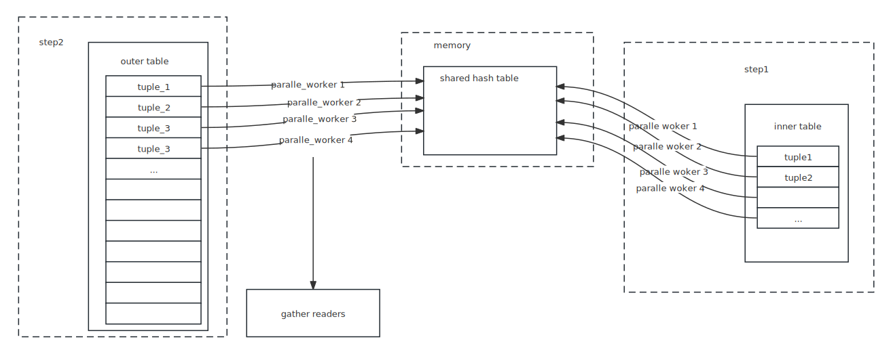

hash join
high level view
See Queries in PostgreSQL: 6. Hashing
One-pass hash join
Note that join in PostgreSql, we scan the right relation first, which means that
the right relation is the "inner relation" and the left relation is the outer
one.

Two-pass hash join
Since we can't allocate as much memory as we want, instead of building a hash
table of the entire table, PG split the tables to several batches where all
tuples have the same hash value flag.
Batches are splited by hash value. Use several bits in hash value as a flag so we can put the tuples into different batches.
There is a simple optimization that we can build the hash table in the first batch while scanning the inner table, and match the pair while scanning the outer table.
parallel one-pass hash join

With parallel workers, we can
- scan inner table and build shared hash table parallelly
- scan outer table parallelly
Although in most cases, the neck of tp system is disk io, but parallel workers can still advance the speed efficiently. Because:
- In single process situation, the disk IO is synchronous，which means CPU is in idle while waiting IO. So, in the parallel case, CPU can be utilized more sufficiently.
- OS may has the technique to load the disk's content in advance, which is perdicularly useful in sequence scan. So multi-workers can read data file content more efficiently.
- In hash join, the compute of hash value may cost more CPU resource than normal TP operation.
parallel two-pass hash join
Same as the basic two-pass hash join, parallel workers build batches parallelly, both in reading from inner/outer tuple and writing data to tmp file. Since no worker can obtain a whole batch's data in the first scan, the technique described above can be used here.
Low level complement
Single process
inner join
This is the simplest join method in hash join. So we introduce a simple hash join state machine here. (See ExecHashJoinImpl for detail )
START WITH:
state ==> HJ_BUILD_HASHTABLE
case HJ_BUILD_HASHTABLE:
state ==> HJ_NEED_NEW_OUTER
case HJ_NEED_NEW_OUTER:
### generate a new outer tuple
state ==> HJ_NEED_NEW_BATCH ### No more tuple in this batch.
==> HJ_SCAN_BUCKET; ### Find a outer tuple. Can this one matches a
inner one?
case HJ_SCAN_BUCKET:
### Scan the selected hash bucket for matches to current outer
state ==> HJ_NEED_NEW_OUTER ### Whether we can find a match or not, we
always generate a new outer tuple.
case HJ_NEED_NEW_BATCH:
### Try to advance to next batch
state ==> HJ_NEED_NEW_OUTER;
==> FINISH
right join
To complete right join, we can just emit each outer tuple even if there's no matched innner tuple.
case HJ_SCAN_BUCKET:
state ==> HJ_FILL_OUTER_TUPLE ### Can not find a match. Is it a left join?
==> HJ_NEED_NEW_OUTER
case HJ_FILL_OUTER_TUPLE:
state ==> HJ_NEED_NEW_OUTER; ### Whether emit the outer tuple with
null-filled left tuple or not, we always
generate a new outer tuple.
left join
To complete this, we must remember whether a inner tuple has been matched. So
case HJ_NEED_NEW_OUTER:
state ==> HJ_FILL_INNER_TUPLES ### This batch has been finished, see if
there are unmatched inner tuples.
==> HJ_NEED_NEW_BATCH
==> HJ_SCAN_BUCKET
case HJ_FILL_INNER_TUPLES:
state ==> HJ_NEED_NEW_BATCH ### No more unmatched inner tuples, so start
the next batch
==> HJ_FILL_INNER_TUPLES ### return an unmatched inner tuple.
summary
Until now, we can generate a full state machine in non-parallel mode
START WITH:
state ==> HJ_BUILD_HASHTABLE
case HJ_BUILD_HASHTABLE:
state ==> HJ_NEED_NEW_OUTER
case HJ_NEED_NEW_OUTER:
### generate a new outer tuple
state ==> HJ_FILL_INNER_TUPLES ### This batch has been finished, see if
there are unmatched inner tuples.
==> HJ_NEED_NEW_BATCH ### No more tuple in this batch.
==> HJ_SCAN_BUCKET; ### Find a outer tuple. Can this one matches a
inner one?
case HJ_SCAN_BUCKET:
### Scan the selected hash bucket for matches to current outer
state ==> HJ_FILL_OUTER_TUPLE ### Can not find a match. Is it a left join?
==> HJ_NEED_NEW_OUTER ### Whether we can find a match or not, we
always generate a new outer tuple.
case HJ_NEED_NEW_BATCH:
### Try to advance to next batch
state ==> HJ_NEED_NEW_OUTER;
==> FINISH
parallel hash
Note that
BarrierArriveAndWaitwill increase current phase. So each phase's status is not be assigned directly but self-increased.
Let introduce the state machine first
START WITH:
case HJ_BUILD_HASHTABLE:
### If multi-batch, we need to hash the outer relation up front.
ExecParallelHashJoinPartitionOuter(node);
state ==> HJ_NEED_NEW_BATCH ### Select a batch to work on.
case HJ_NEED_NEW_OUTER:
ExecParallelHashJoinOuterGetTuple
sts_parallel_scan_next
case HJ_NEED_NEW_BATCH:
ExecParallelHashJoinNewBatch()
switch PHJ_BATCH_STATE
case PHJ_BATCH_ELECT:
### One backend allocates the hash table
ExecParallelHashTableAlloc
### Fall through
case PHJ_BATCH_ALLOCATE:
### Wait for allocation to complete and Fall through
case PHJ_BATCH_LOAD:
### Start (or join in) loading tuples and Fall through.
case PHJ_BATCH_PROBE:
### This batch is ready to probe
ExecParallelHashTableSetCurrentBatch
return true;
case PHJ_BATCH_SCAN:
### detach and go around again
case PHJ_BATCH_FREE:
state ==> HJ_NEED_NEW_OUTER
Code level Detail
utility
ExecHashGetBucketAndBatch: hash value to bucket number and batch number
ExecHashGetBucketAndBatch(HashJoinTable hashtable,
uint32 hashvalue,
int *bucketno,
int *batchno)
{
uint32 nbuckets = (uint32) hashtable->nbuckets;
uint32 nbatch = (uint32) hashtable->nbatch;
if (nbatch > 1)
{
*bucketno = hashvalue & (nbuckets - 1); ### tricky way as MOD
*batchno = pg_rotate_right32(hashvalue,
hashtable->log2_nbuckets) & (nbatch - 1);
### rotate hashvalue and MOD nbatch
}
else
{
*bucketno = hashvalue & (nbuckets - 1);
*batchno = 0;
}
}
ExecHashTableInsert: insert hash value
ExecHashTableInsert
ExecHashGetBucketAndBatch(hashtable, hashvalue,
&bucketno, &batchno);
if (batchno == hashtable->curbatch) ### put into hash table
hashTuple = (HashJoinTuple) dense_alloc
hashtable->spaceUsed += hashTupleSize;
### For single batch, we may increase the nbucket
if (hashtable->nbatch == 1)
if (ntuples > (hashtable->nbuckets_optimal * NTUP_PER_BUCKET) && xxx)
hashtable->nbuckets_optimal *= 2;
hashtable->log2_nbuckets_optimal += 1;
### For multi-batches, we may increase the batches
if (hashtable->spaceUsed +
hashtable->nbuckets_optimal * sizeof(HashJoinTuple) +
> hashtable->spaceAllowed)
ExecHashIncreaseNumBatches()
else ### put the tuple into a temp file for later batches
ExecHashJoinSaveTuple()
ExecHashIncreaseNumBatches: increase batches
ExecHashIncreaseNumBatches
nbatch = oldnbatch * 2; ### double nbatches
### init/update batchfiles
if (hashtable->innerBatchFile == NULL)
hashtable->innerBatchFile = palloc0_array(BufFile *, nbatch);
hashtable->outerBatchFile = palloc0_array(BufFile *, nbatch);
PrepareTempTablespaces();
else
hashtable->innerBatchFile = repalloc0_array()
hashtable->outerBatchFile
### resize nbuckets?
if (hashtable->nbuckets_optimal != hashtable->nbuckets)
hashtable->nbuckets = hashtable->nbuckets_optimal;
hashtable->log2_nbuckets = hashtable->log2_nbuckets_optimal;
hashtable->buckets.unshared = repalloc_array()
### scan through allchunks
while (oldchunks != NULL)
nextchunk = oldchunks->next.unshared
### scan through all tuples in the chunk
idx = 0
while (idx < oldchunks->used)
HashJoinTuple hashTuple = (HashJoinTuple) (HASH_CHUNK_DATA(oldchunks) + idx);
...
### where should the tuple go?
ExecHashGetBucketAndBatch(hashtable, hashTuple->hashvalue,
&bucketno, &batchno);
if (batchno == curbatch)
### keep the tuple but copy it into the new chunk
copyTuple = (HashJoinTuple) dense_alloc(hashtable, hashTupleSize);
hashtable->buckets.unshared[bucketno] = copyTuple;
else
### dump it out
ExecHashJoinSaveTuple()
idx += MAXALIGN(hashTupleSize);
pfree(oldchunks);
oldchunks = nextchunk;
ExecHashJoinSaveTuple: save a tuple to a batch file.
BufFileWrite(file, &hashvalue, sizeof(uint32));
BufFileWrite(file, tuple, tuple->t_len); ### len is record in
MinimalTupleData structure